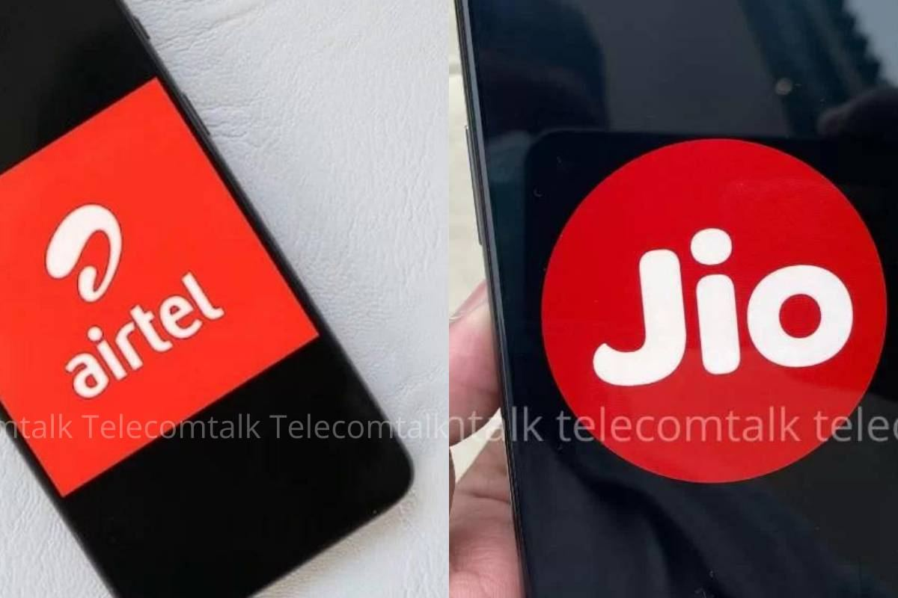

21. November

Bharti Airtel und Reliance Jio im Postpaid-Preiskampf Was das für uns heißtEinstiegs-Postpaid für 349 bis 499 Rupien mit unterschiedlichen Datenvolumina - zeigt, wie stark der Preiskampf im unteren Segment die Marge drückt. Xiaomi Redmi Note 17 Pro 256 GB 455,08 €Saturn/MediaMarkt · o2-Netz günstiger als Vodafone Promo 240 € Telekom Deutschland MagentaMobil M: Unlimited Datenvolumen und 240 € Cashback
Auf einen Blick
- Telekommunikationsanbieter in Europa und Asien intensivieren den schärferen Preiskampf im Postpaid- und Glasfasersegment durch zielgerichtete Rabatte.
- Staatliche Förderungen und neue Frequenzfreigaben treiben den Ausbau von ländlichem 5G und Satelliten-Direktverbindungen voran.
- Die Integration autonomer KI-Agenten in Endgeräte und Netzwerkinfrastrukturen beschleunigt sich branchenweit, während Sicherheitsrisiken in der Lieferkette steigen.
Themen der Woche

Das Wichtigste
In dieser Woche zeigt sich im globalen Telekommunikationsmarkt ein verstärkter Fokus auf automatisierte Netzwerke, KI-gestützte Endgeräte-Dienste und aggressiven Preiskampf im Einstiegsbereich. In Spanien erhalten Telefónica und Orange über 17 Millionen Euro an staatlichen Fördermitteln, um Funklöcher in extrem ländlichen Regionen zu schließen. In Indien liefern sich Bharti Airtel und Reliance Jio einen harten Preiskampf bei Postpaid-Einstiegstarifen zwischen 349 und 499 Rupien. Gleichzeitig treiben globale Satellitenanbieter wie SpaceX und Starlink die Frequenzsicherung und die Verbesserung der Innenraumversorgung voran. Die Netzbetreiber setzen zunehmend auf Eigenentwicklungen und Automatisierung, um die Betriebskosten zu senken und die Netzqualität bei wachsendem Datenvolumen zu sichern.
Was wichtig ist
- Starlink Starlink erhält Freigabe für neue Satellitenfrequenzen in Brasilien
- Google MediaMarkt bietet hohe Ankaufprämien für Google Pixel
- Bharti Airtel Bharti Airtel misst höhere Datenraten im Postpaid
- t3n KI Finanzkonzern Goldman Sachs schränkt den Zugriff auf teure KI-Werkzeuge ein
- WhatsApp WhatsApp erhöht maximale Gruppengröße auf 1500 Mitglieder
- InPost Betrüger nutzen gefälschte InPost-Paket-SMS für Datendiebstahl
- OpenAI Chile schließt Partnerschaft mit OpenAI für öffentliche Verwaltung

Die wichtigsten Meldungen
Starlink - Starlink erhält Frequenzfreigabe in Brasilien (Regulierung, Dringlichkeit 4/5) Die brasilianische Telekommunikationsbehörde Anatel hat Starlink die Nutzung von neun neuen Subband-Frequenzen in den Ku-, Ka- und Q/V-Bändern bis März 2027 genehmigt. Dies beschleunigt die Expansion des Satellitenbetreibers im lateinamerikanischen Raum und erhöht den Druck auf terrestrische Anbieter Quelle.
Bharti Airtel - Bharti Airtel und Reliance Jio im Postpaid-Preiskampf (Tarif/Pricing, Dringlichkeit 4/5) Reliance Jio bietet ein neues Einstiegs-Postpaid-Paket für 349 Rupien mit 30 GB Datenvolumen an, während Bharti Airtel einen Tarif für 499 Rupien mit unbegrenzten 4G- und 5G-Daten sowie Streaming-Diensten vertreibt. Damit reagieren die Betreiber auf den wachsenden Margendruck im unteren Kundensegment Quelle.
Telefónica - Millionen für ländliches 5G in Spanien (Netz/Technologie, Dringlichkeit 4/5) Telefónica und Orange erhalten über 17 Millionen Euro aus dem staatlichen Programm „5G Redes muy rurales“, um 5G in extrem ländlichen Regionen ohne bisherige 4G- oder 5G-Abdeckung aufzubauen. Die Maßnahme dient als Blaupause für die kofinanzierte Schließung weißer Flecken Quelle.
SpaceX - SpaceX plant Mikro-Zellen für Starlink Mobile (Netz/Technologie, Dringlichkeit 4/5) SpaceX hat die Produktion von Dach-Mikro-Zellen ab dem kommenden Jahr angekündigt, um die mangelhafte Gebäudeversorgung von Starlink Mobile zu beheben. Damit greifen Satellitenanbieter direkt die Herausforderung der Innenraumabdeckung auf Quelle.
Apple - Autonome KI-Agenten für Siri in iOS 28 (Produktlaunch, Dringlichkeit 4/5) Apple entwickelt einen neuen KI-Agenten für iOS 28, der eigenständig komplexe Aufgaben über Apple Intelligence ausführen soll. Die Weiterentwicklung treibt die Automatisierung von Service-Assistenten auf Mobilgeräten voran Quelle.
Sparkassen - Sparkasse führt Click to Pay ein (Tarif/Pricing, Dringlichkeit 4/5) Die Sparkassen führen ab Ende November 2026 den Zahlungsstandard Click to Pay für Mastercard und Visa ein, um Online-Bezahlvorgänge zu vereinfachen. Dies setzt neue Maßstäbe für digitale Bezahlprozesse im Kundenportal Quelle.
Elisa - Elisa setzt auf eigenen Autonomie-Code (Netz/Technologie, Dringlichkeit 3/5) Das finnische Unternehmen Elisa hat Ingenieure darin geschult, den Code für ein autonomes Netzwerk auf Level 4 selbst zu schreiben. Damit reduzieren Netzbetreiber ihre Abhängigkeit von externen Software-Anbietern Quelle.
Bharti Airtel - Höhere Datenraten im Postpaid-Netz (Netz/Technologie, Dringlichkeit 3/5) Bharti Airtel verzeichnete im September 2026 durchgehend höhere mobile Daten-Download-Geschwindigkeiten bei Postpaid-Tarifen im Vergleich zu Prepaid-Tarifen. Postpaid-Downloads lagen typischerweise bei 23 Mbps gegenüber 18 Mbps bei Prepaid Quelle.

Europa
Europäische Telekommunikationsanbieter konzentrieren sich auf staatlich geförderte Netzausbauprojekte und die Integration neuer Bezahl- und Entertainment-Dienste. In Spanien erhalten Telefónica und Orange Fördergelder für den ländlichen 5G-Ausbau Quelle. Amazon bietet im Rahmen von Black-Friday-Aktionen Rabatte von bis zu 75 Prozent für Streaming-Zusatzkanäle an Quelle. Gleichzeitig vergrößert WhatsApp die maximale Gruppengröße auf 1,500 Mitglieder Quelle, und MediaMarkt bietet hohe Ankaufprämien für Google-Smartphones an Quelle.

Deutschland
- Deutsche Telekom Deutsche Telekom treibt derzeit massiv ihre Position in den Bereichen Künstliche Intelligenz und Netzqualität voran.
- Telefónica / O2 Telefónica und O2 treiben aktuell ihre Infrastruktur- und Social-Initiativen voran, darunter die Verdreifachung von Geschwindigkeiten bei Sozialtarifen durch Virgin Media O2 sowie die…
- 1&1 1&1 positioniert sich im Mobilfunk zunehmend als ernstzunehmender Vierter im Markt, was durch starke Platzierungen in aktuellen Netztests (u.a. „sehr gut“ bei CHIP und Platz 2 bei IMTEST)…

Asien
Asiatische Netzbetreiber treiben den Wettbewerb im Einstiegs-Postpaid-Segment voran und analysieren die Qualitätsunterschiede zwischen Abrechnungsmodellen. Bharti Airtel und Reliance Jio positionieren Tarife zwischen 349 und 499 Rupien, um preisbewusste Kunden zu binden Quelle. Zudem zeigen Messungen deutlich höhere Geschwindigkeiten für Postpaid-Kunden im Vergleich zu Prepaid-Kunden Quelle.

Lateinamerika
Lateinamerikanische Regulierungsbehörden und TK-Konzerne verstärken die Integration von Satellitenfrequenzen und sicheren Kommunikationsstrukturen. Die US-Behörde FCC hat neue Frequenzen für Erdfestationen und Drohnenkommunikation freigegeben Quelle, während die brasilianische Marine Mesh-MANET-Technologien von Motorola Solutions für krisensichere Kommunikation erprobt Quelle. Chile treibt zudem die Nutzung künstlicher Intelligenz in der öffentlichen Verwaltung durch eine Partnerschaft mit OpenAI voran Quelle.

Technologie, Geräte & Regulierung
In der Lieferkette für künstliche Intelligenz und digitale Infrastrukturen steigen die Anforderungen an Datenschutz und Kostenkontrolle erheblich. Ein Sicherheitsexperte deckte durch das Platzieren von zwei Millionen digitalen Markierungen gravierende Datenschutzlecks in KI-Vermittlungsdiensten auf, bei denen sensible Nutzerdaten über Anbietergrenzen hinweg abflossen Quelle. Wegen stark steigender Ausgaben für Software-Lizenzen schränkt der Finanzkonzern Goldman Sachs die Nutzung von Programmier-Assistenten künftig strikt auf Entwickler ein Quelle. Diese Entwicklungen unterstreichen den wachsenden wirtschaftlichen und sicherheitstechnischen Druck beim Einsatz externer KI-Werkzeuge, den auch Netzbetreiber bei der Automatisierung interner Prozesse berücksichtigen müssen.

Muster der Woche
- Intensive Preiskämpfe im Postpaid-Bereich: Betreiber wie Bharti Airtel und Reliance Jio optimieren ihre Einstiegstarife, um trotz sinkender Margen Kunden im Mobilfunk zu halten.
- Verstärkter Einsatz von KI-Agenten: Unternehmen wie Apple integrieren autonome KI-Assistenten tief in Endgeräte, was die Automatisierung von Kundenprozessen branchenweit beschleunigt.
- Fokus auf ländliche Netzinvestitionen: Staatliche Förderungen in Europa und neue Frequenzfreigaben in Lateinamerika treiben den gezielten Ausbau von 5G und Satellitenverbindungen in bisher unversorgten Regionen voran.

Worauf wir warten
0 von 5 in Bewegung
Kippt die Preisuntergrenze im deutschen Markt?
Eine Unlimited-Flat unter 35 Euro oder ein Anschlusspreis von null verschiebt die Untergrenze fuer das ganze Portfolio - und beides wird selten als Pressemitteilung angekuendigt.
- Unlimited-Tarif unter 35 Euro beobachtet Aggressive Unlimited-Flat im o2-Netz für 14,99 Euro Unlimited Mobile / o2 · 2026-11-19 o2 streicht den Anschlusspreis für Unlimited-Tarif o2 · 2026-11-18
- Anschlusspreis faellt weg beobachtet Aggressive Unlimited-Flat im o2-Netz für 14,99 Euro Unlimited Mobile / o2 · 2026-11-19 o2 streicht den Anschlusspreis für Unlimited-Tarif o2 · 2026-11-18
- Preiserhöhung angekündigt ruhend
Wird Satellit zum Endkundenprodukt?
Solange Direct-to-Cell ein Notrufdienst ist, ist es Technik. Sobald es ein buchbarer Tarifbestandteil mit Preis wird, ist es Portfolio.
- Direct-to-Cell wird buchbar beobachtet Iridium startet kommerziellen Satellitendienst für Direktverbindungen Iridium · 2026-11-18
- Satellit im Tarif eines europäischen Anbieters ruhend
Erodiert eSIM das Roaming-Geschäft?
Reise-eSIMs nehmen Roaming-Erloese ab, ohne dass ein Betreiber den Vertrag sieht. Die Bewegung ist gut belegt, der Zeitpunkt nicht.
- Travel-eSIM-Anbieter wächst oder wird gekauft beobachtet Rakuten Mobile und Mastercard testen eSIM mit KI-Zahlungen Rakuten Mobile · 2026-11-20
- Roaming-Preise oder -Erlöse verändern sich beobachtet Bharti Airtel startet Travel Week Kampagne mit Roaming-Rabatten Bharti Airtel · 2026-11-19 Marokko plant automatisches nationales Roaming zur Netzverbesserung Marokkanisches Ministerium für Künstliche Intelligenz und Digitale Transformation · 2026-11-18
Wird KI zum bezahlten Tarifbestandteil?
Eine KI-Lizenz im Tarif ist der erste Differenzierungs-Hebel seit Jahren, den Kunden auf der Rechnung sehen - und der erste, bei dem Vodafones Wettbewerber im deutschen Markt vorgelegt haben.
- KI-Assistent im Tarif enthalten beobachtet Signal blockiert Apple Siri und Google Gemini vor Bildschirmen Signal · 2026-11-20 Google plant Steuerung von macOS durch Gemini-KI Google · 2026-11-20
- KI-Gerät eines Netzbetreibers ruhend
Zwingt die Regulierung zu einer Portfolio-Änderung?
Vorgaben zu Preisklauseln, Vertragslaufzeiten oder Kuendigungsfristen wirken unmittelbar auf jeden Tarif - und sie kommen mit Vorlauf, wenn man den Vorlauf beobachtet.
- Vorgabe zu Preisklauseln oder Laufzeiten beobachtet o2 verlängert Mindestlaufzeit für Tarif ohne Pressemitteilung o2 · 2026-11-18
- Digital Networks Act / TKG-Novelle ruhend
Diese Ausgabe als Foliensatz 4 Folien, für den Montagstermin